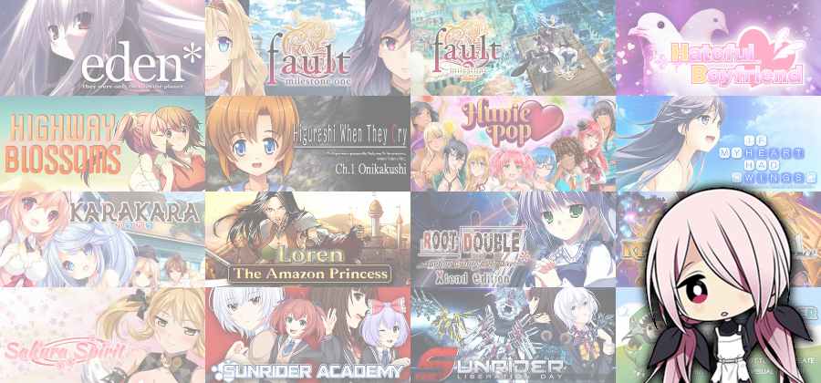
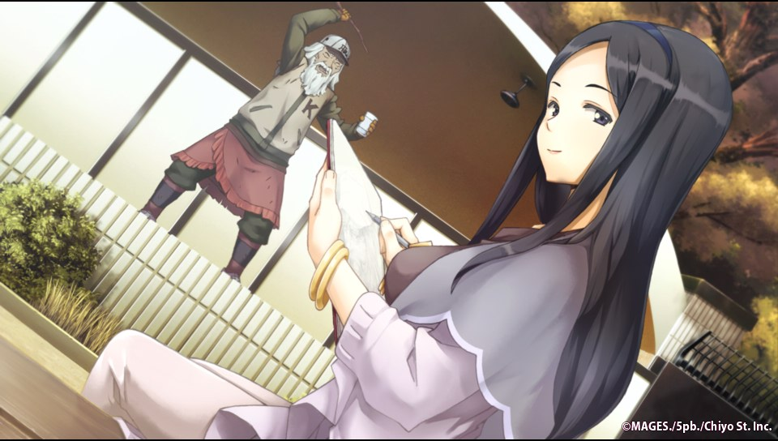
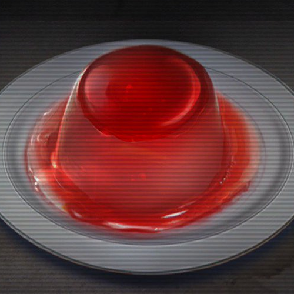
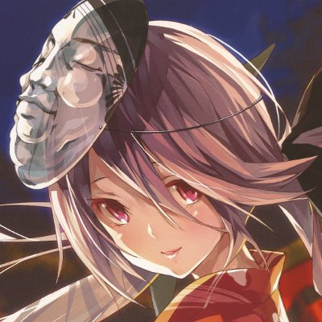

☜
Chaos;Child - Fake Sky End
In the final release of Chaos;Child, Nono did not have a bad ending route. Said bad ending was cut from the final game but the files still exist in a broken state (the script crashes if you run it, sound effects are missing and so on). The bad end splits after Senri reveals her true form and Serika dies. Having returned to school, Senri decides to visit the grave of Nono; this time without inviting Takuru. After visiting the grave and receiving ghostly encouragement, Senri turns to head home…
Senri did not deserve to die again.
- Minamisawa Senri
Minamisawa Senri birthday giveaway
To celebrate my birthday, I am giving away some duplicate Steam keys again. This year the available Steam keys are:
- eden*
- Fault milestone one
- Fault milestone two side:above
- Hatoful Boyfriend
- Highway Blossoms
- Higurashi When They Cry Hou - Ch.1 Onikakushi
- HuniePop
- If My Heart Had Wings
- KARAKARA
- Loren The Amazon Princess - Deluxe Edition
- Root Double -Before Crime * After Days- Xtend Edition
- RPG Maker VX Ace
- Sakura Spirit
- Sunrider Academy
- Sunrider: Liberation Day - Captain's Edition
- TyranoBuilder Visual Novel Studio
Escape clauses:
- Priority will be granted to Twitter followers who had followed me before the giveaway start (07:00 GMT 7th June). New followers will then be fed the leftovers.
- All entries should be made before 12:00 GMT 10th June; I will try to match up keys to entrants at this point and will contact winners afterwards with the result.
- If the game keys do not work then I will not be able to offer an alternative key. As far as I know, they should all be valid keys.
- I can rig this giveaway as much as I like - I may give some entrants their first choice or otherwise resort to randomisation or optimum pairings.
How to enter:
Send me a direct message on Twitter or mention me in a reply. State your desired game, or give a list in preference order in the case that your top priority choice is taken.
- Minamisawa Senri
Occultic;Nine Review
Heading into the Occultic;Nine game, I was hoping for a Noah-style adaptation to improve on the base. Having watched the anime and read the first two light novels, I had found the core story and concepts good but felt that some of the side characters required some more expansion.
Instead of taking the anime ending and constructing routes alongside, they decided to just tweak the same route slightly so that not all information was present at once. You end up reading the same content again and again; hearing the same puke-drink-pun ten times does not make it any funnier / funny. After the three normal character routes, I hoped the true endings at least would give something new. They did not. The only route of note is the bad end.
Scenes which did not feature Gamon ended up cut, explained second-hand or forced in. Some of my favourite scenes involved MMG and Takasu. None of these scenes were shown and Takasu appears for about ten lines. We did get a few new scenes but these mostly took place in Bloo Moon, were based around the blog articles and only involved Gamon, Ryoka and Izumi.
The flaws in the story were not helped by the mechanics. The ‘Blogging triggers’ only mattered on the first two choices, but prevented skipping through the rest of the story. After making these decisions (about 1/5 of the way through the story) you then have to reach the last part for any change to occur (about 1/5 of the way from the end). The ‘Skysensor triggers’ did matter (a certain number are required to view all ends). In this case, there was no skip prevention and the triggers lasted for only a single line of text on occasion. With both of these triggers combined, more time overall was spent skipping rather than reading.
The only positive I can find in this adaptation was the MMM episodes. All new content here; thirty episodes, each of about five minutes in length.
Overall, the Occultic;Nine game is a bad adaptation, only existing for the sake of milking. Stick to the anime or light novels. However, the path is now opened to Anonymous;Code – hopefully the next instalment in this universe does not meet the same fate.
- Minamisawa Senri
Ode to Chaos;Child
Back in 2014 when Chaos;Child was first released, someone made the wise decision to market it as an Xbox One exclusive. With under 1500 sales in the first week, the release failed badly. I had decided to buy an Xbox One for the sole purpose of playing Chaos;Child. To this day, it is still the only Xbox One game I own. I have no regrets.
The story of Chaos;Child truly stands out; the various plot twists, the emotional lows and the dramatic finale all work together to forge a masterpiece. I could give a detailed review here of all the positives of Chaos;Child, but that would take a significant amount of time for me to write and for you to read; I would rather you spent that time playing.
No longer must you resort to reading my summary document - thank you to PQube for their localisation and promotion efforts. If you want to explore more of the Chaos World after completing Chaos;Child, check out the short stories which accompanied the anime or the summary of Chaos;Child LoveChuChu.
The delusion has finally become reality.
- Minamisawa Senri

☞
Minamisawa Senri is the mysterious girl who appears in Chaos;Child.
If you have not finished Chaos;Child, anything more about her would be spoilers.
If you have finished Chaos;Child, you already know that she is great.

I mostly cover SciADV and SciVN related news and content (along with Nitroplus games).
I tend to write summary documents for each of the new game releases.
Although I don't have much free time, I am always happy to answer questions or take suggestions.
Prepare yourself for positive delusions galore in Chaos;Child LoveChuChu!
Experience the other half of the story; the worldline where she could not be saved - Steins;Gate 0.
Six years on, the New Generation Madness returns to Shibuya. Welcome to Chaos World, Chaos;Child.
- Placeholder
- Placeholder
- Placeholder
- Placeholder
- Placeholder